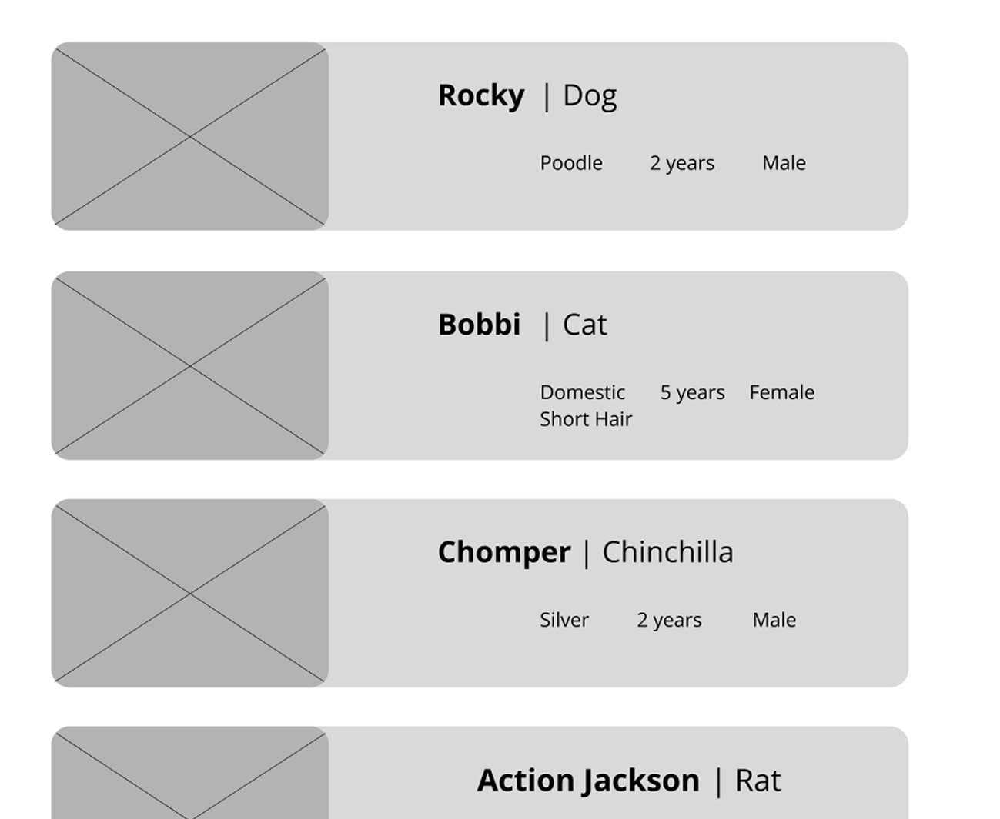
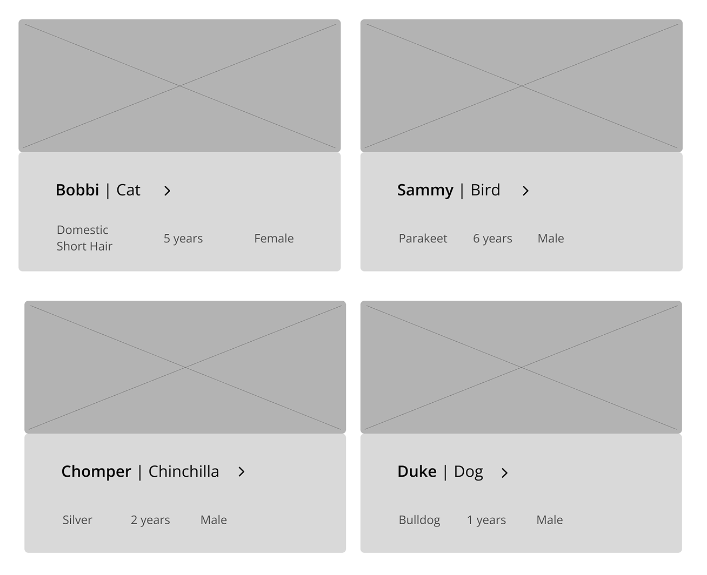
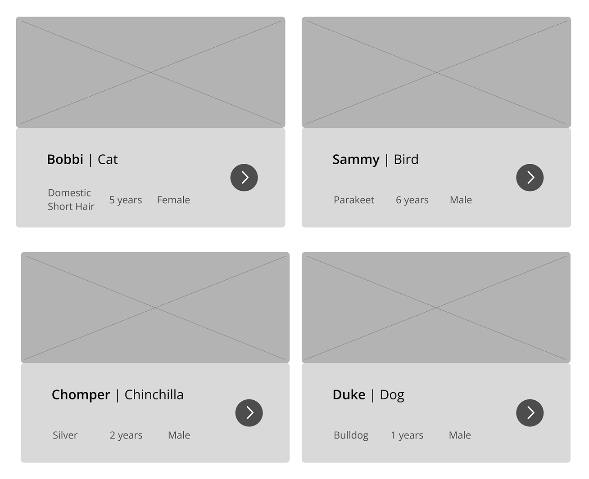
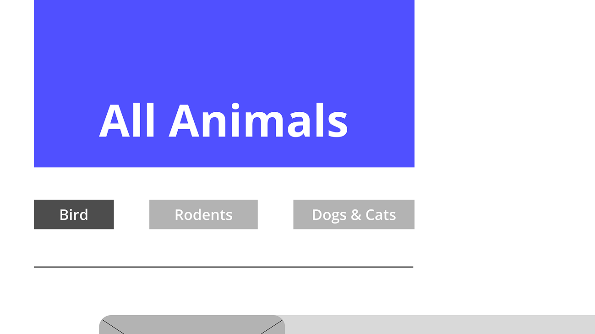
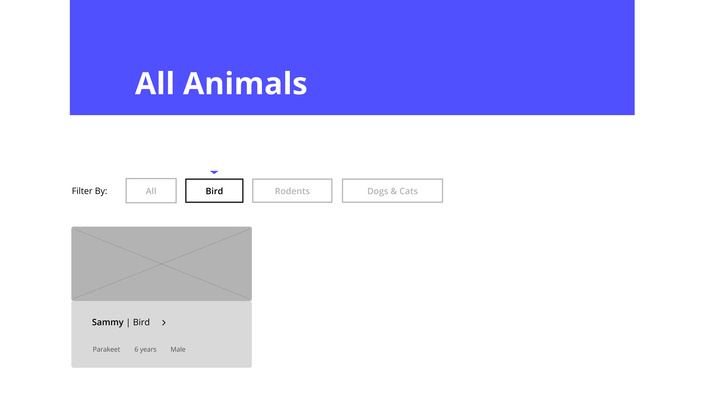
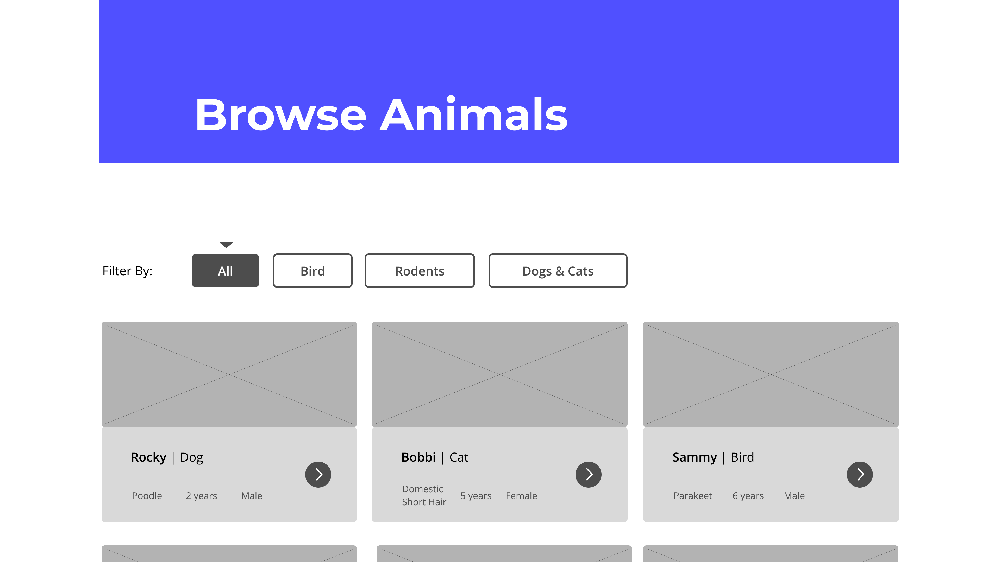
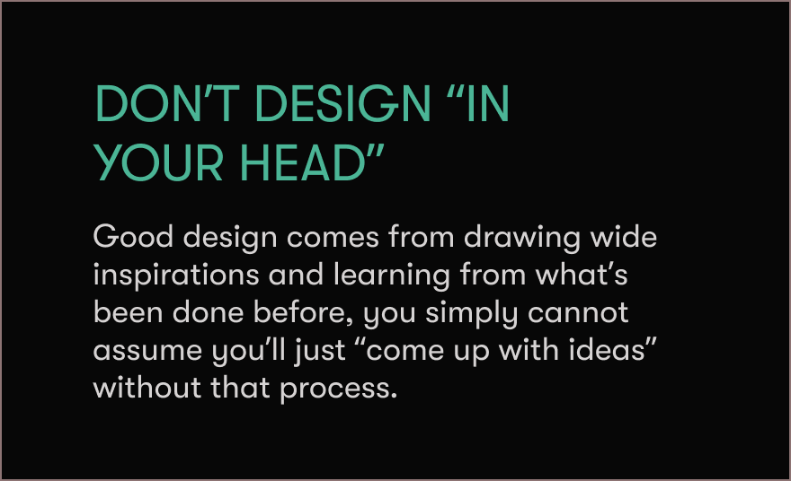
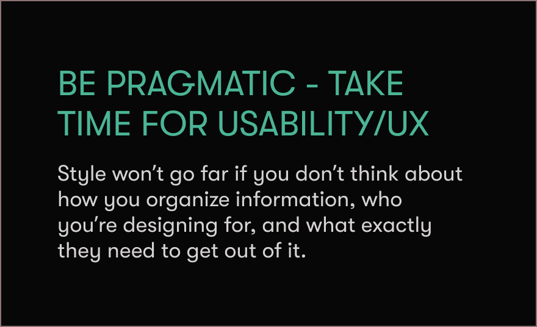
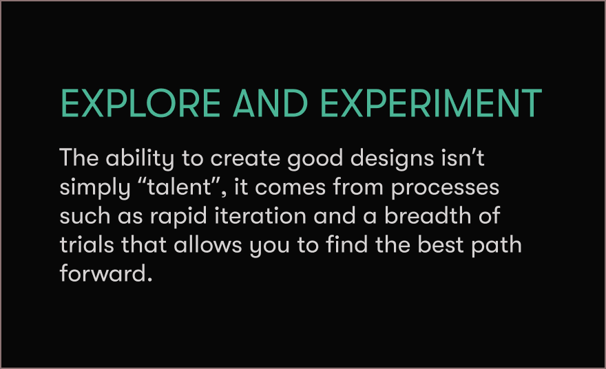

Pet Adoption Database
Providing accessible and clear information design built with semantic markup
Tasked with creating a site for browsing pets that are up for adoption, myself and two other teammates organized the info-set across various pages and built out the site to focus on accessibility and clarity. To do this, we tested options with wireframes, addressed accessibility concerns, and designed specifically for different device sizes.
[I was responsible for the pet cards, homepage, and individual animal pages]
Iterative Wireframing
I employed wireframing with stripped-down styling to rapidly test various design choices without working in full fidelity. This way, I could test different layout options of the information I had and catch and discard problematic designs early, iterating towards the design’s best form.






Semantic markup and accessible design
During the implementation stage of this project, I practiced semantic and accessible web best practices to make the website accommodating for screen-readers and other tools. This is seen in website interactions in that they are built with distinctive focus-states, and avoid hover-only animations.
Try tabbing through and hitting enter to open the dropdown!
Responsive Layouts
When designing for multiple screen sizes, I introduced breakpoints where the layout restructured entirely to keep the information organization clear and intentional rather than compressing a single layout. However, throughout the breakpoints I maintained consistent visual cues to ensure the hierarchy remained recognizable and the experience felt cohesive across screen sizes.
Full-bleeds remain full bleeds, text areas remain clustered with their specific images, and hierarchy and relationships between elements are maintained.
key takeaways.
During this project, I helped bring our team to success by researching design techniques and principles that could guide us, creating many different concepts and iterations to find the right idea, and being quick to pick up and understand software features in order to implement our design into a dynamic prototype.


